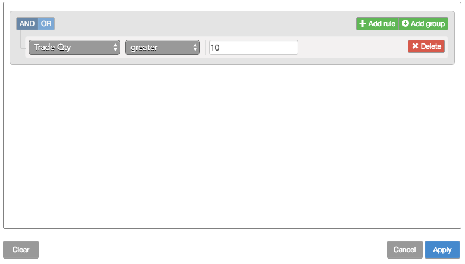
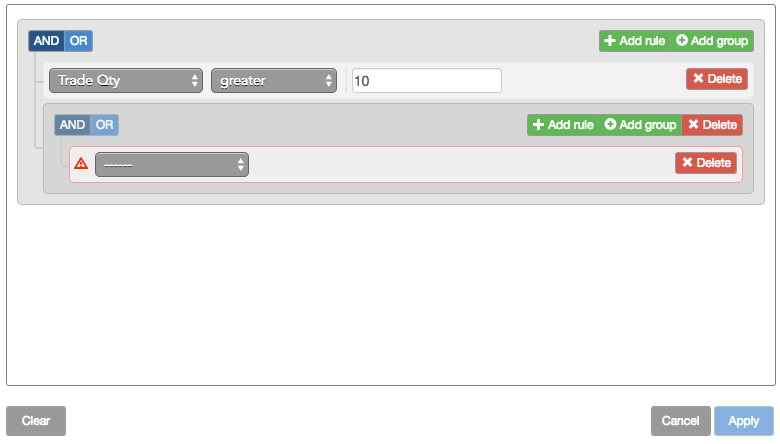
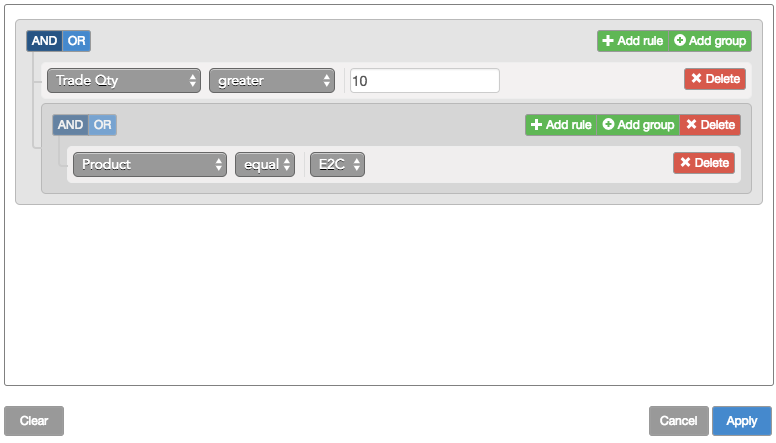
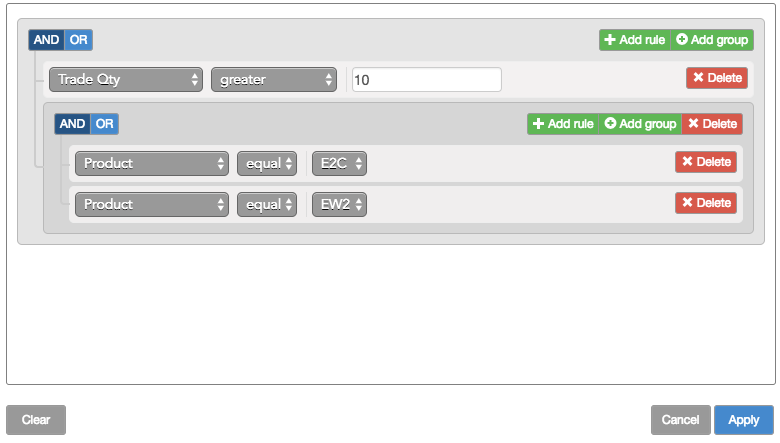
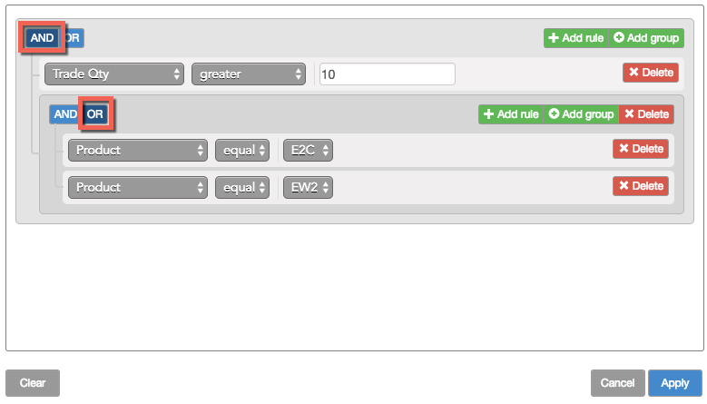
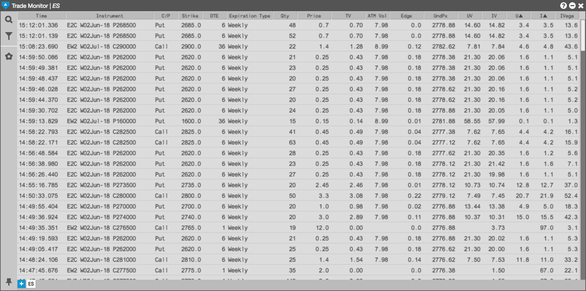

Click the Filter icon to open the Filter builder.
Click Add rule

Select the desired field you want to use in the filter; then select the desired criteria for the field.

Click Add group.

Select the desired field you want to use in the filter; then select the desired criteria for the field.

Click Add rule and select the desired field you want to use in the filter; then select the desired criteria for the field.

In the group area, click AND or OR as desired.

Click Apply.
The contents of the Options Trade Monitor widget updates to show only those trades that match the filter rule. In this case, the filter finds all trades for E2C or EW2 options whose trade quantity is greater than ten.
